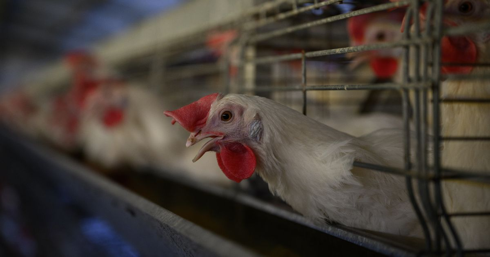

Argentina es el país que más huevos come por persona en el mundo. Calculá tu consumo en un minuto y descubrí opciones más baratas y nutritivas para reemplazarlo de a poco.
Contá también los que van "escondidos" en otras comidas. No hace falta que sea exacto.
Huevos escondidos: una milanesa casera lleva medio huevo, una porción de torta o budín más o menos uno, y un flan casero, uno por porción.
Gallinas, plata, agua y emisiones que suman tus huevos en un año.
Una gallina pone unos 302 huevos por año: casi uno por día, todo el año.

En Argentina, la mayoría de las gallinas ponedoras vive en jaulas. Cada una tiene menos espacio que una hoja A4: no puede abrir las alas, escarbar ni hacer un nido.
Todo esto pasa lejos de nuestra vista. Si te genera algo, es normal: a mucha gente le pasó lo mismo, y por eso existe este recorrido.
Agua usada para producir el alimento de las gallinas y el resto de la producción.
Te decimos lo que muestra la evidencia, sin exagerar.
En un estudio de Harvard con más de 170.000 personas seguidas hasta 32 años, reemplazar una pequeña parte de la proteína del huevo (3% de las calorías) por proteína vegetal se asoció con un 19% menos de mortalidad. Es un estudio observacional: muestra una asociación fuerte, no prueba causa.
Un estudio con 30.000 personas seguidas 17 años (JAMA, 2019) encontró que cada medio huevo diario extra se asociaba con un 17% más de riesgo cardiovascular y un 18% más de mortalidad, sobre todo por el colesterol de la yema. Otros análisis no encontraron más riesgo con hasta un huevo por día en personas sanas (BMJ, 2020): la evidencia no es unánime, pero las alternativas vegetales no tienen colesterol.
En tres grandes estudios de EE. UU., cada huevo diario se asoció con un 14% más de riesgo de diabetes tipo 2. En Europa y Asia la asociación no aparece, y los autores creen que pesa con qué se come el huevo (Am J Clin Nutr, 2020).
El huevo tiene 0 g de fibra. Las lentejas, la harina de garbanzo y la soja texturizada aportan fibra, y la mayoría de la gente come menos de la recomendada (25 g por día, según la OMS).
Sumá un suplemento de vitamina B12: es simple, barato y necesario para cualquier persona que no consuma productos animales.
No hace falta dejar todo de golpe. Elegí cuántos huevos por semana te animás a reemplazar.
| Para reemplazar 1 huevo | Cuánto | Proteína | Fibra | Costo aprox. |
|---|
Precios relevados en tiendas online de Buenos Aires en octubre de 2026. Cambian seguido: tomalos como referencia. Valores nutricionales aproximados.
Tortas, budines y panqueques con media banana pisada en lugar de cada huevo. Es el cambio más fácil.
Milanesas y rebozados con harina de garbanzo y agua en vez de huevo batido.
Probá una tortilla de papas o un revuelto con harina de garbanzo. Con un poco de sal negra (kala namak), sabe a huevo.
Mirá qué quedó y elegí el próximo cambio. Cada huevo que cambiás cuenta.